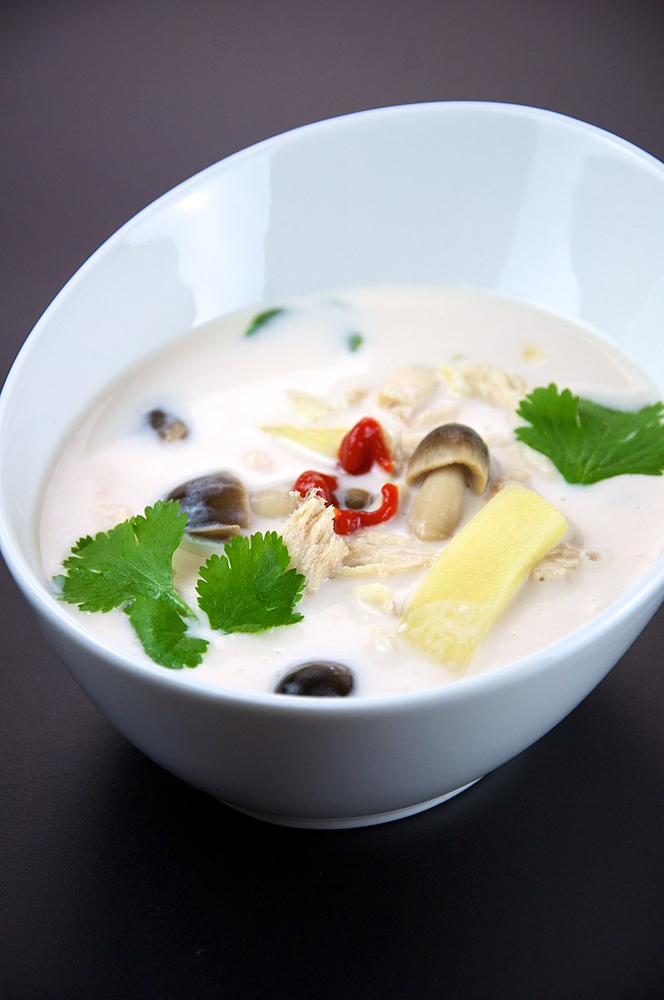

Tom Kha Gai (Chicken Coconut Soup)

Traditional Tom Kha Gai Soup with all of the classic garnishes.
Description
Tom Kha Gai Soup is the most popular Thai soup recipe loaded with scrumptious flavours.
It is an easy-to-make healthy soup recipe that you can prepare for your friends and family in chilled winters.
Ingredients
The Soup
- 250 gram chicken breasts
- 1 cup coconut cream
- 2 Tbsp fish sauce
- 1 Tbsp ginger
- salt to taste
- ½ Tbsp vegetable oil
- 250ml of water
- 2 Tbsp lime juice
- chili flakes to taste
Garnishing
- 1 Tbsp of green onion
- ½ Tbsp of cilantro